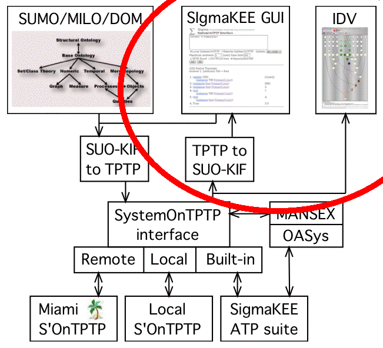

Displaying Results

Three Displays
- TPTP format proofs
- Integrated IDV
- SigmeKEE's hyper-linked SUO-KIF display
GUI Interface
- Formula text box for SUO-KIF queries
- Selection of local or remote SystemOnTPTP
- Selection of ATP system
- Maximal number of answers
- CPU time limit for ATP
- Ask (and tell) button